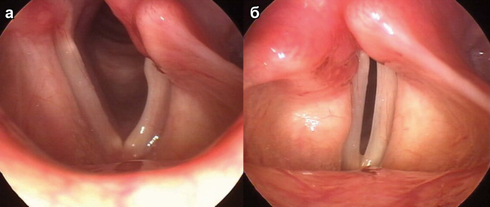

Нарушения голоса, парезы и параличи гортани
Параличи и парезы гортани
Нервно-мышечная патология гортани делится на миогенные, нейрогенные и психогенные формы. Миопатические парезы редки, двусторонни и затрагивают мышцы, приводящие голосовые складки. Парез голосовых мышц (mm. vocales) даёт овальную щель между складками при фонации, осиплость, слабость голоса и «продувание гортани», так что больной вынужден чаще делать вдох при речи. Паралич боковых перстнечерпаловидных мышц оставляет ромбовидную щель и ведёт к шёпотной речи. Паралич поперечной черпаловидной мышцы оставляет треугольный просвет в задних отделах и меньше всего нарушает функции.
Положение голосовых складок при нейрогенных параличах определяется последовательностью выключения мышц (закон Розенбаха—Семона). Периферические параличи связаны с поражением возвратного нерва: причинами служат аневризма дуги аорты (слева), плевральные спайки верхушки правого лёгкого, опухоли средостения, пищевода и щитовидной железы, зоб, инфекционные и токсические невриты, повреждение при струмэктомии. Первой перестаёт работать задняя перстнечерпаловидная мышца, единственная расширяющая голосовую щель, затем выключаются остальные мышцы, и лишь потом складка занимает трупное положение, промежуточное между полным приведением и крайним отведением. При одностороннем параличе складка сначала неподвижна в срединном положении, здоровая складка примыкает к ней при фонации, голос удовлетворительный, дыхание свободное. Когда процесс переходит на приводящие мышцы, складка отходит от средней линии, на ней появляется вогнутость, она занимает трупное положение, возникает охриплость. Через несколько месяцев развивается компенсаторная гипераддукция здоровой складки, голос звучит обычно, но вокальные упражнения невозможны.
Острый двусторонний паралич возвратных нервов протекает тяжело. Больной сидит, опираясь руками о край кровати, на лице страх, дыхание редкое стридорозное, на вдохе западают надключичные ямки и надчревная область, цианоз губ, частый пульс. Дыхание несколько улучшается не ранее чем через 2–3 дня, когда складки занимают трупное положение и щель между ними не более 3 мм. Центральные параличи обусловлены бульбарными и надъядерными поражениями (множественный склероз, сирингомиелия, кровоизлияния, опухоли продолговатого мозга) и при корковой природе бывают двусторонними. Синдромальные параличи возникают при миастенических синдромах и миотониях. Функциональный паралич проявляется мнимой афонией: голос при смехе, кашле, плаче звучный, а речь возможна только шёпотом. Чаще болеют женщины при истерии, неврастении, стрессе; афония может так же внезапно исчезнуть.

Функциональная дисфония
Функциональная дисфония — нарушение голосовой функции, характеризующееся неполным смыканием голосовых связок при отсутствии патологических изменений в гортани; наблюдается при невротических состояниях. Синонимы: фонастения, афония (функциональная афония), гипотонусная, гипертонусная и гипо-гипертонусная дисфония (вестибулярно-складковый, ложноскладковый голос).
Заболевание диагностируют у 40% больных с расстройством голосовой функции. Стойкие гипотонусные дисфонии составляют 80% в структуре функциональных расстройств голосообразования.
Классификация и этиология
В зависимости от типа голосоведения и характера смыкания голосовых складок различают афонию; гипо-, гипер- и гипо-гипертонусную дисфонии. По этиопатогенетическому фактору выделяют мутационную, психогенную и спастическую дисфонию.
Основными этиологическими факторами развития функционального расстройства голоса считают конституциональные, анатомические, врождённые особенности голосового аппарата, перенапряжение голоса, психотравмирующие факторы, ранее перенесённые заболевания дыхательных путей, астенический синдром любой этиологии. Гипотонусные расстройства могут формироваться и на фоне длительного молчания, а также после хирургических вмешательств на гортани при атрофии голосовых складок. Тревожные и депрессивные расстройства — причина развития функциональной дисфонии в 29,4% и при спастической дисфонии в 7,1% случаев. У 52% пациентов с функциональной дисфонией диагностируют гормональные расстройства, чаще заболевания щитовидной железы. Другие причины — неврологические заболевания, такие как болезнь Паркинсона и миастения, черепно-мозговая травма, нарушение мозгового кровообращения и др.
Функциональные изменения обратимы, но в ряде случаев могут приводить к органическим изменениям гортани. Например, длительно текущая гипотонусная дисфония или психогенная афония приводит к развитию атрофического ларингита с формированием борозды голосовой складки. Одновременно с этим формируется ложноскладковая фонация, которая вызывает гипертрофию вестибулярных складок. Гиперкинетическая дисфония — причина формирования стойких нарушений микроциркуляции голосовых складок и появления гранулём, язв, полипов, узелков и другой патологии гортани.
Механизм развития заболевания во время мутации голоса связан с дискоординацией перехода от фальцетного механизма голосообразования к грудному. У мальчиков высота голоса понижается на октаву, голосовые складки удлиняются на 10 мм и утолщаются. У девочек высота голоса понижается на 3–4 полутона, а длина голосовых складок изменяется на 4 мм. В норме мутация завершается в течение 3–6 мес.
Клиническая картина
Таблица 1. Формы функциональной дисфонии (по тексту национального руководства, с. 878–879)
| Форма | Клиническая картина | Ларингоскопическая картина |
|---|---|---|
| Гипотонусная дисфония | Быстрая утомляемость голоса, придыхательная охриплость | Неполное замыкание голосовой щели при фонации: вытянутый овал, линейная щель или треугольник в задней трети голосовых складок |
| Гипертонусная дисфония | Фонация с напряжением мышц шеи, голос резкий, охриплость выражена | Усиление сосудистого рисунка, гиперемия, пересмыкание голосовых складок при фонации; со временем — ложноскладковый голос |
| Гипо-гипертонусная (вестибулярно-складковый голос) | Фонация на уровне вестибулярных складок | Гипертрофия вестибулярных складок; голосовые складки могут не просматриваться, при фонации смыкаются вестибулярные |
| Афония | Отсутствие звучности голоса при сохранении шёпотной речи | Отсутствие смыкания голосовых складок при фонации |
| Мутационная дисфония | Нарушения голоса в период мутации | Может быть нормальной; иногда усиление сосудистого рисунка, овальная щель или «мутационный треугольник» в задних отделах |
| Спастическая дисфония | Напряжённо-сдавленная прерывистая фонация, дрожание, охриплость, нарушение разборчивости речи | Абдукторная форма — признаки гиперфункциональной дисфонии; аддукторная — голосовые складки не смыкаются при фонации |
Для функциональной дисфонии характерно длительное расстройство голосовой функции — несколько недель, месяцев и даже лет. Отмечается её нестабильность, ухудшение голоса после нагрузки, на фоне ухудшения общего состояния, после перенесённых вирусных инфекций.
Диагностика
Большое значение для диагностики голосовых расстройств, особенно функциональной природы, имеет субъективная оценка голоса, которую можно дополнить нагрузочными тестами (например, чтением вслух в течение 40 мин), а также психологическим тестированием с целью выявления соматоформных расстройств.
Для дифференциальной диагностики голосовых расстройств проводят ларинго-, микроларинго-, микроларингостробо-, видеоларингостробо-, эндофиброларинготрахеоскопию, акустический анализ голоса, определение времени максимальной фонации, спектральный компьютерный анализ голоса, оценку функции внешнего дыхания, глото- и электромиографию, рентгеновскую томографию гортани и трахеи, КТ гортани. При гипотонусной дисфонии акустическое исследование выявляет уменьшение времени максимальной фонации в среднем до 11 с, снижение интенсивности голоса у женщин до 67 дБ, у мужчин до 73 дБ.
Дифференциальная диагностика необходима в случае афонии с двусторонним параличом гортани, когда у пациента сохраняется озвученный кашель. Возможно проведение теста с заглушением. При утрате слухового контроля за голосом возможно его полное восстановление. В процессе диагностики и лечения расстройств голосовой функции требуется мультидисциплинарный подход с привлечением к процессу реабилитации невролога, эндокринолога, психиатра и фонопеда.
Лечение
Подход к лечению функциональных дисфоний должен быть комплексным. Необходимо воздействие на этиопатогенетические факторы: лечение общесоматических заболеваний, соматоформных расстройств, санация очагов хронической инфекции. Цели лечения — формирование правильных навыков устойчивой фонации, повышение выносливости голосового аппарата. Госпитализация показана при необходимости проведения хирургического лечения.
Самый эффективный метод лечения функциональных расстройств голосовых функций — фонопедия, артикуляционная и дыхательная гимнастика. Активно применяют иглорефлексо-, психо- и физиотерапию, массаж воротниковой зоны. Из физиотерапевтических методов при гипотонусной дисфонии рекомендуют применять электростимуляцию мышц гортани диадинамическими токами, амплипульс, электрофорез на гортань с неостигмина метилсульфатом. Мутационная дисфония не требует специальной терапии, за исключением лечения сопутствующих заболеваний, рациональной психотерапии и фонопедии.
Лекарственная терапия при гипотонусной дисфонии включает стимулирующие средства (элеутерококка колючего корневища и корни, витамины группы B, неостигмина метилсульфат 10–15 мг внутрь 2 раза в день в течение 2 нед) и улучшающие микроциркуляцию голосовых складок препараты. При гипо-гипертонусной дисфонии и ложноскладковой фонации проводят общую и местную противовоспалительную терапию гипертрофического ларингита. Лечение спастической дисфонии проводят совместно с неврологами. Применяют ГАМК-ергические препараты, блокады мышц гортани, массаж мышц шеи и фонопедию.
При выраженной стойкой гипотонусной дисфонии показаны имплантационная хирургия или тиропластика, цель которых — усиление аддукции голосовых складок. При ложноскладковой фонации с гипертрофией вестибулярных складок хирургическое лечение заключается в удалении гипертрофированных участков вестибулярных складок. В некоторых случаях необходимо продолжать фонопедию в течение нескольких месяцев. При лечении лиц голосоречевых профессий, особенно вокалистов, требуется длительное наблюдение с коррекцией голосовой нагрузки. по: Нац. руководство, 2016, с. 876–880
Точка зрения зарубежных авторов
Немецкое руководство выделяет дисфонию вследствие неправильного использования голоса и мышечного напряжения: основной симптом — утомляемость голоса, больные ощущают боль в горле и шее, «ком в горле», голос с лёгкой или умеренной охриплостью; перегрузка голоса может привести к органическим изменениям — узелкам, полипам, кистам голосовых складок, контактным гранулёмам. При видеостробоскопии специфических находок нет, кроме щели в задних отделах голосовой щели в фазе смыкания у большинства больных. При психогенной (конверсионной) афонии голосовые складки при попытке фонации сближаются, но не смыкаются; лечение проводят логопед или психотерапевт, конверсионную афонию лечат сразу, при первом же визите. по: Behrbohm и соавт., разд. 5.1.3
Спастическую дисфонию немецкие авторы относят к фокальным дистониям, связанным с нарушением функции базальных ганглиев. Голос при ней характерен, но из-за редкости заболевания диагноз часто пропускают или ошибочно ставят функциональную дисфонию. «Золотым стандартом» лечения считают инъекции ботулинического токсина типа А в голосовые (щиточерпаловидные) мышцы, при абдукторной форме — в заднюю перстнечерпаловидную мышцу; инъекции повторяют каждые 3–4 месяца. Хирургическое лечение (миэктомия, нейрэктомия, тиропластика II типа) оставляют для случаев, когда ботулинический токсин недостаточно эффективен. по: Behrbohm и соавт., разд. 5.1.3.3
Источники
- Бабияк В. И., Накатис Я. А., Говорун М. И. Оториноларингология. Руководство. Т. 2. — СПб.: Питер, 2009. — Часть IV, гл. 20 «Болезни гортани»: параличи и парезы гортани — с. 191–198.
- Оториноларингология: национальное руководство / под ред. В. Т. Пальчуна. — 2-е изд., перераб. и доп. — М.: ГЭОТАР-Медиа, 2016. — Гл. 13, раздел «Функциональная дисфония» (Романенко С. Г.): с. 876–880.
- Behrbohm H., Kaschke O., Nawka T., Swift A. Ear, Nose, and Throat Diseases with Head and Neck Surgery. — Stuttgart: Thieme. — Разд. 5.1.3 «Regulatory Voice Disorders».
Раздел «Учебник» — справочная теория, не клинические рекомендации. Тактика ведения пациента — по разборам КР.